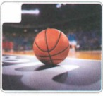
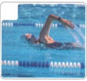
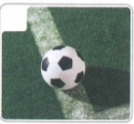

他篮球打得很好
Bạn ấy chơi bóng rổ rất hay
HSK 2 · Bài 7
🔥 Khởi động · Môn thể thao
Chọn từ đúng cho từng hình: A 跑步 B 篮球 C 游泳 D 足球



Nói: 吃完早饭…… / 下课…… / 回家…… — Sau mỗi việc, bạn sẽ làm gì?
📚 Từ vựng 1 · Học trước khi nghe
🎧 Nghe Bài khóa 1
（1）安妮是什么时候回来的？
（2）安妮想跟陈天中去做什么？
💬 Đọc Bài khóa 1
（1）陈天中为什么一下课就往外跑？
（2）安妮想去做什么？
🧠 Câu ghép rút gọn “…就…”
“…就…” biểu thị hành động thứ hai xảy ra ngay sau hành động thứ nhất; hành động thứ nhất cũng có thể là điều kiện/nguyên nhân, hành động thứ hai là kết quả.
你怎么一下课就往外跑？
我一到家，妈妈就打来电话了。
一到星期六，陈天中就跟同学去打篮球。
Hoàn thành hội thoại:
（1）A：你今天早点儿回来。 B：好的，我 ________ 就回来。
（2）A：我一下飞机，________。 B：因为我给她打电话了，让她去接你。
（3）A：你看，小猫 ________ 就过来了。 B：是啊，因为它爱吃鱼。
📚 Từ vựng 2 · Học trước khi nghe
🎧 Nghe Bài khóa 2
（1）星期天陈天中做什么？
（2）星期天陈天中跟谁去玩？
💬 Đọc Bài khóa 2
（1）陈天中喜欢什么运动？
（2）陈天中踢球踢得怎么样？
🧠 Bổ ngữ trạng thái (1)
Bổ ngữ trạng thái đứng sau động từ, nêu rõ trạng thái của hành động.
我踢得还可以。
他们玩得很高兴。
白家月跑得不快。
Nghi vấn: 你跑得快吗？ / 他来得早不早？ / 他们玩得怎么样？
（1）A：你听，她唱得怎么样？ B：________。
（2）A：妹妹喜欢吃这个菜吗？ B：不太喜欢，她 ________。
（3）A：你昨天晚上 ________？（睡） B：________。
📚 Từ vựng 3 · Học trước khi nghe
🎧 Nghe Bài khóa 3
（1）安妮打篮球打得怎么样？
（2）安妮喜欢做什么？
💬 Đọc Bài khóa 3
（1）安妮跑步跑得怎么样？
（2）安妮游泳游得怎么样？
🧠 Bổ ngữ trạng thái (2)
Nếu động từ là động từ li hợp, cần lặp lại từ tố có tính chất động từ. Nếu động từ có tân ngữ, có thể đưa tân ngữ lên trước động từ hoặc lặp lại động từ.
hoặc V + O + V + 得 + …
我游泳游得不快。
你篮球打得怎么样？
白家月写汉字写得很好看。
（1）A：安妮唱歌唱得好听吗？ B：________。
（2）A：你足球踢得 ________？ B：________。
（3）A：家月中文说得 ________？ B：________。
📚 Từ vựng 4 · Học trước khi nghe
🎧 Nghe Bài khóa 4
听两遍课文，判断正误。Nghe bài khóa hai lượt và phán đoán đúng sai.
（1）陈天中非常喜欢运动。（ ）
（2）陈天中游泳游得不快。（ ）
📖 Đọc Bài khóa 4
Chọn đáp án đúng:
（1）陈天中篮球打得怎么样？ A 很好 B 不好 C 还可以
（2）陈天中一有时间就做什么？ A 运动 B 休息 C 跟爸爸出去
✏️ Bài tập tổng hợp
Chọn từ thích hợp: A 跑步 B 运动 C 从 D 开始 E 游泳
（1）你看过她 吗？游得怎么样？
（2）我们9点 上课，你别来晚了。
（3）你 跑得快不快？我想跟你一起去运动。
（4）A：你喜欢什么 ？ B：足球、篮球什么的都喜欢。
（5）A：你喜欢学中文吗？ B：喜欢，我 8岁就开始学中文了。
Nhìn tranh và nói
她喜欢画画，________。
她 ________，有时间就 ________。
我的 ________ 是唱歌，一有时间我就去唱歌。
你们 ________ 这里 ________ 前走，那边更漂亮。
🎭 Hoạt động trên lớp · Khảo sát theo nhóm
Ba người một nhóm, hỏi nhau: thích môn thể thao nào, Chủ nhật làm gì, làm được mức độ nào. Cố gắng sử dụng từ mới và điểm ngôn ngữ đã học.
B：我喜欢打篮球。
A：你篮球打得怎么样？
B：我打得还可以。
✅ Tổng kết Bài 7
他篮球打得很好
✓ Câu ghép rút gọn “……就……”
✓ Bổ ngữ trạng thái với 得
✓ Cấu trúc có tân ngữ/động từ li hợp
✓ Từ vựng về bóng rổ, bóng đá, chạy bộ, bơi và sở thích thể thao
Thứ tự học đã chỉnh: Từ vựng → Nghe bài khóa → Đọc bài khóa.